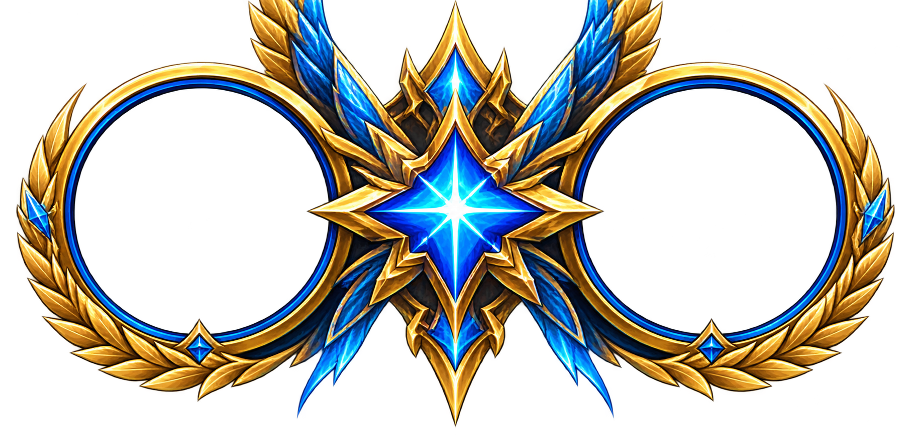
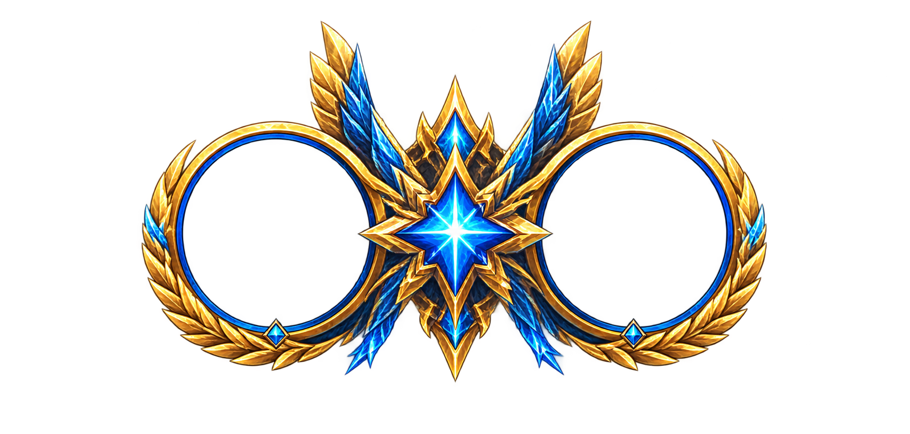
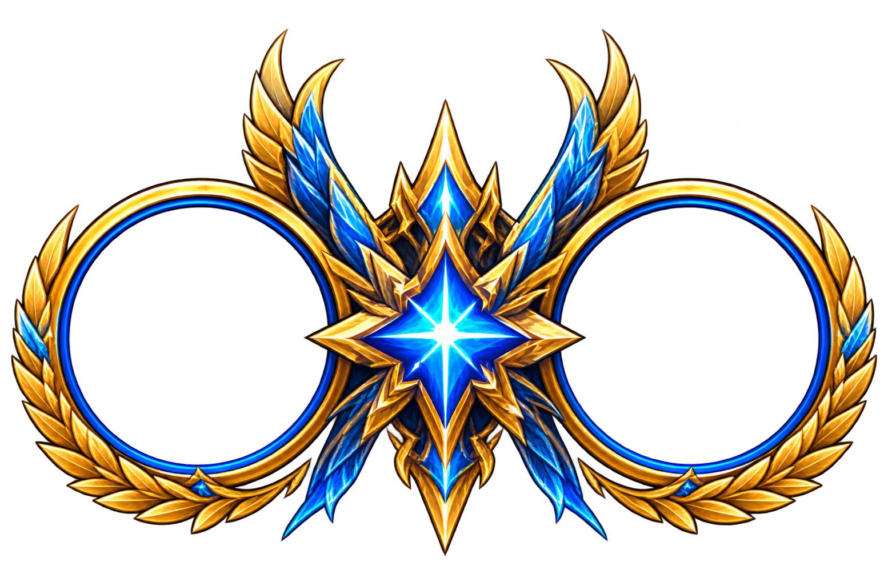
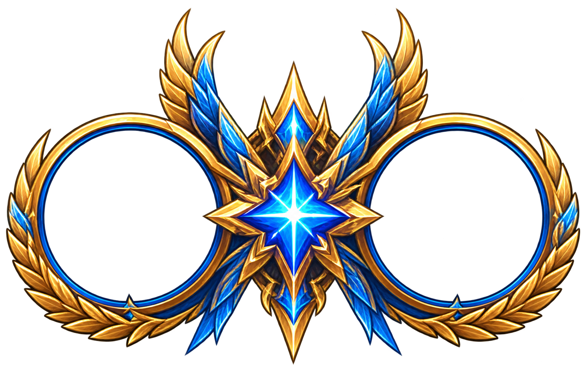

原本から取り直した比較参照
原本crop [4,96,305,292]。元画像は変更していません。
試行1 — 要修正

Upper feather tips cut by canvas; fails complete silhouette requirement. / Original legacy crop itself truncates feather tips.
試行2 — 要修正

Whole silhouette visible but margins insufficient relative to requested 15%; star and lower blue ornament differ from original. / Portrait-rim blue fragments visible inside negative space.
試行3 — 要修正

Corrected complete source crop used; central gold spear and lower blue feather silhouette still differ from source. / Uneven narrow margin and colored fringe/blue fragments; not final-approved.
試行4 — 要修正

Direct cutout wording also changes center geometry and gold/blue lower ornament. / Fine colored fringe and narrow side margin persist; not approved.